Everyone was up early on Monday 4th August so that Victoria could take us to North West Arkansas airport. Google maps took us by the scenic route (avoiding highways), which was interesting, but twisty. I don't think Juniper appreciated it.
So we got to Toronto, via Atlanta, and caught the shuttle bus to our hotel, which was not in a particularly good area. In fact, the hotel was directly under the flightpath of landing aircraft! All we did was go out to a 'transport cafe' for dinner.
Tuesday was our 53rd wedding anniversary. We didn't expect to spend most of it in Toronto airport! The shuttle bus got us there in plenty of time and we checked our bags before going through security and found our gate. We were early, although several people had started gathering. Then we noticed on the display board that our flight had been cancelled! It seems that some people had received an email saying this and some had received alternative bookings. I tried calling Porter airlines, but my phone said I couldn't access that number. Another passenger let me use her phone and it seems that we had been re-booked to Calgary via Montreal.
Unfortunately the flight was much later, so we missed our bus to Banff. We were now due to arrive at 10:30pm in Calgary, which was the time of the last bus. So we decided to cancel the bus and take a taxi. I also emailed the hotel and Rocky Mountaineer to say that we would be late; Banff is one and a half hours drive from Calgary.
We landed a little before 10:30, but the bags took a long time to come out. That is, most other people's bags did. Our's didn't appear! Eventually a man came to the Porter Airlines baggage desk, but could only suggest that we wait a while and then complete an online form about delayed bags. My phone was running out of power, but I managed to join the airport wi-fi and complete the form. Eventually, at about 1:30, we gave up and went out to get a taxi. Only 'limousines' were available, at $100 more than a normal taxi. But we took it and arrived at the hotel (in the photo above) at about 3am. Angela's Post Office card would not work, so I had to pay the taxi using my credit card, which is near its limit. We got to bed at about four!
Wednesday was our free day in Banff. Considering how late we had got to bed, we were up fairly early and had breakfast in the hotel. Then we walked into the town. Very picturesque, but full of tourists (like us). We just had a chewy bar in the park for our lunch before walking back to the hotel.
These are a set of photos of the town. Everywhere you look is photogenic.
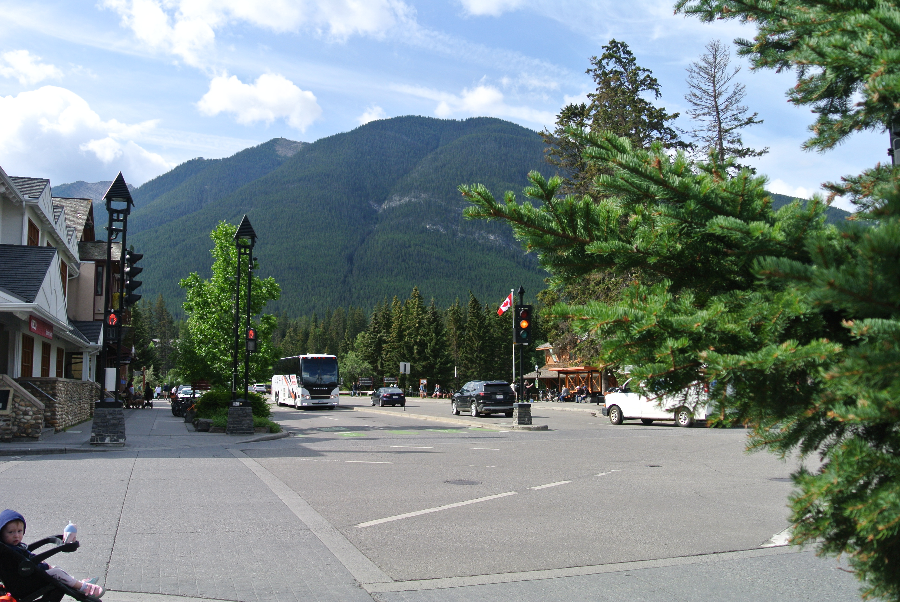 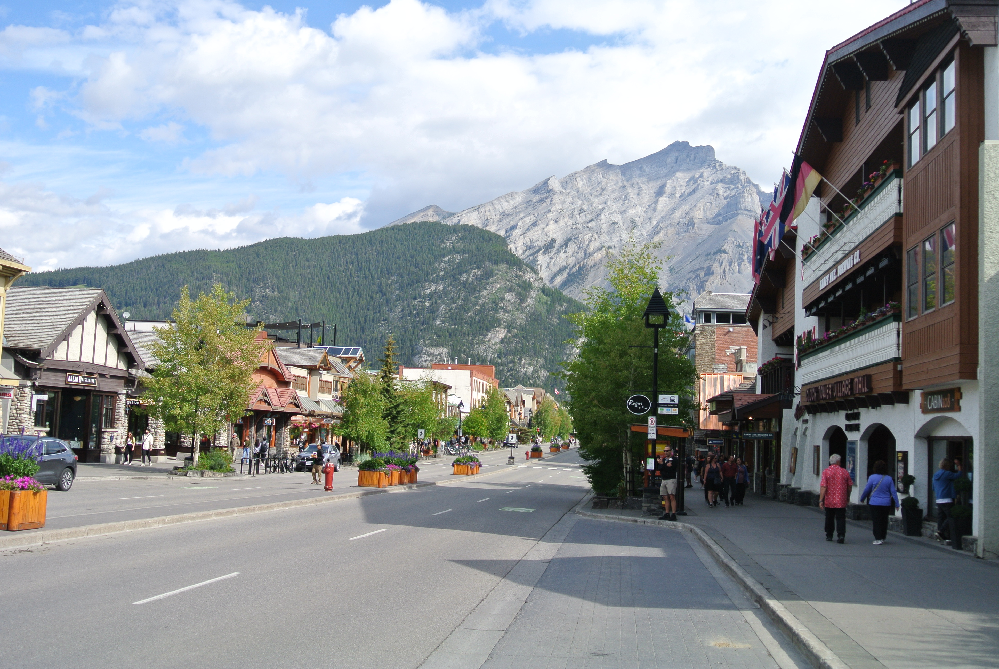 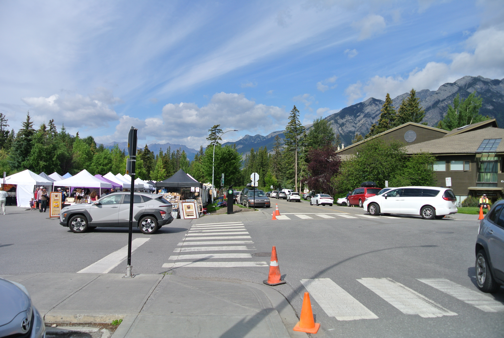 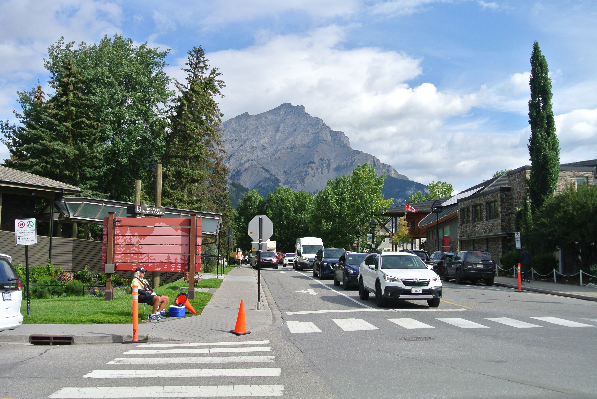 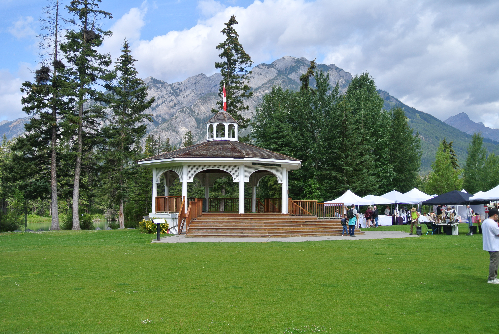 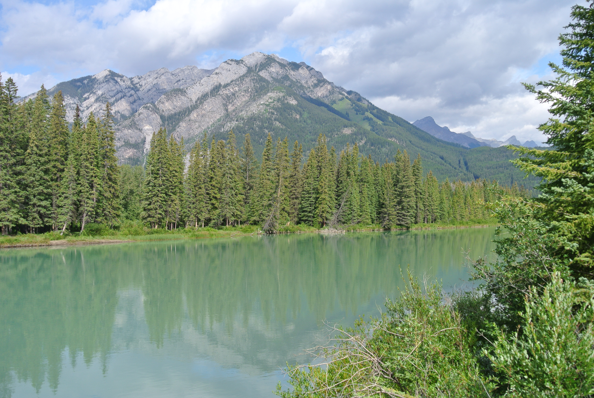 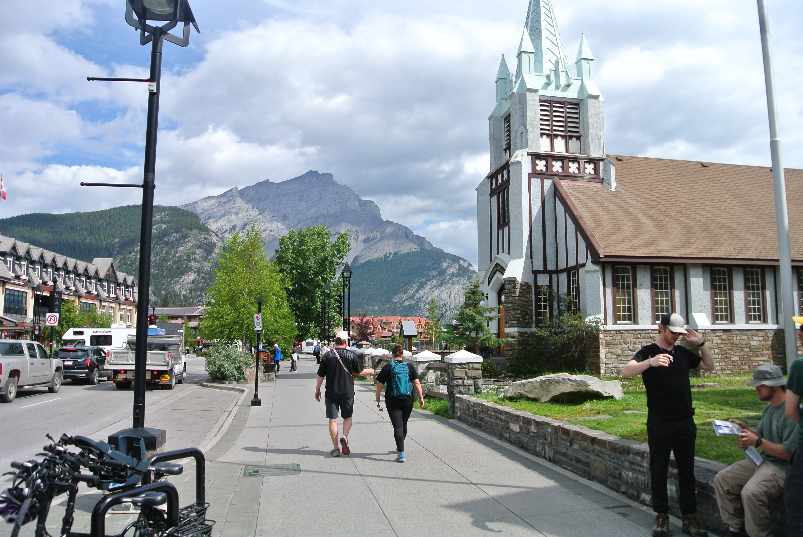 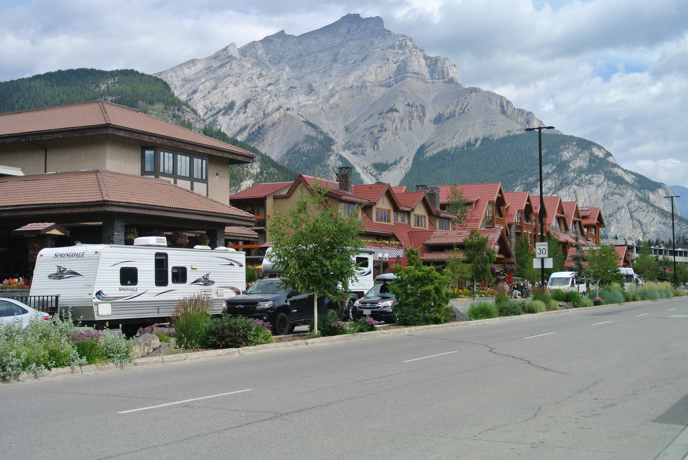I had bought tickets for the Gondola to the top of Sulphur Mountain, but by late afternoon it was raining! Nevertheless, we caught the 'Roam' bus from near the hotel to the Gondola station. We then went up early, walked around the exhibitions (on three floors) and then came down early, getting a free bus back into the town. As you can see from the following collection of photos, the weather could have been better.
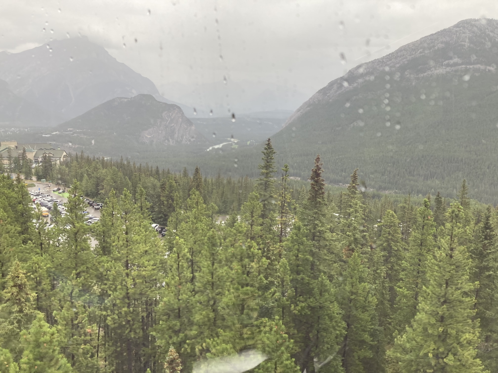 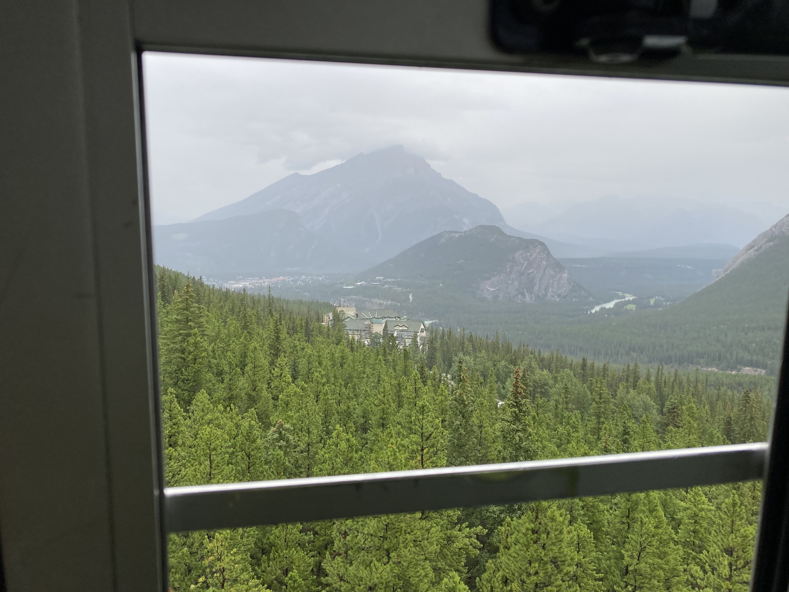 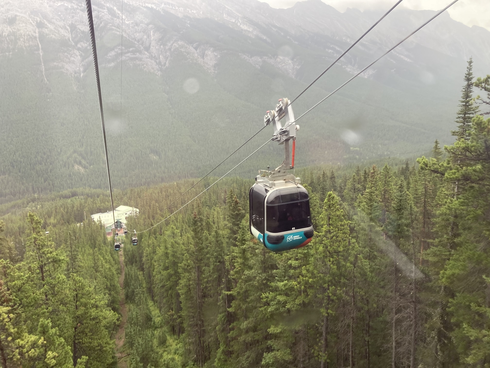 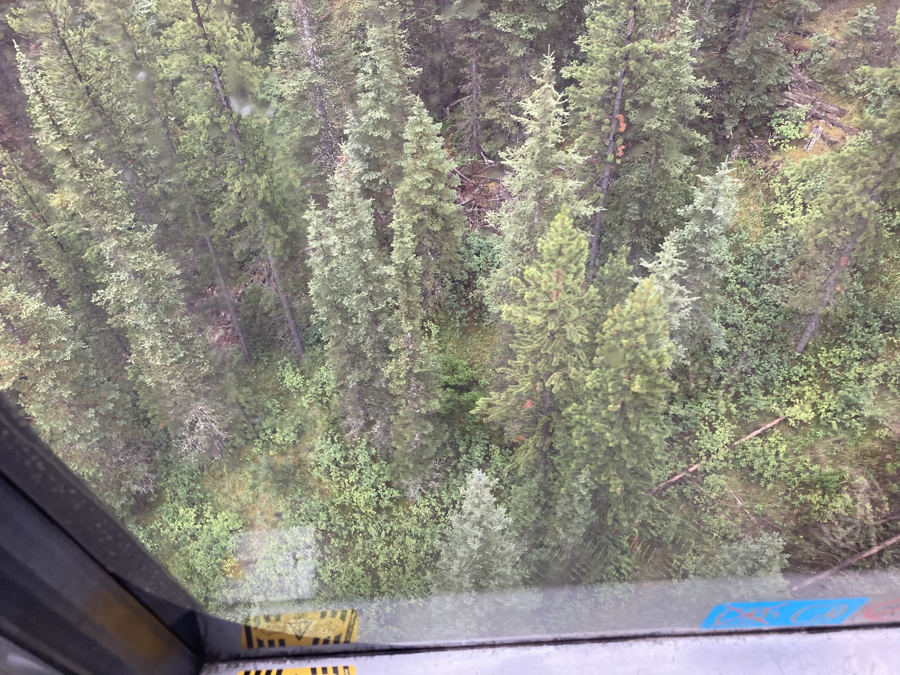 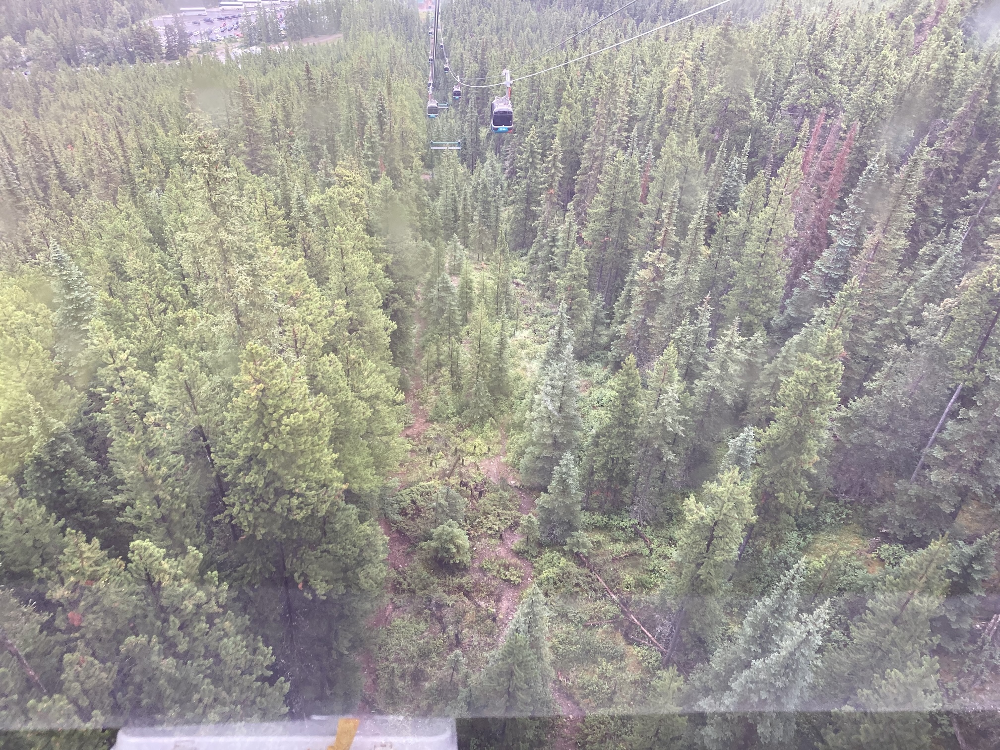 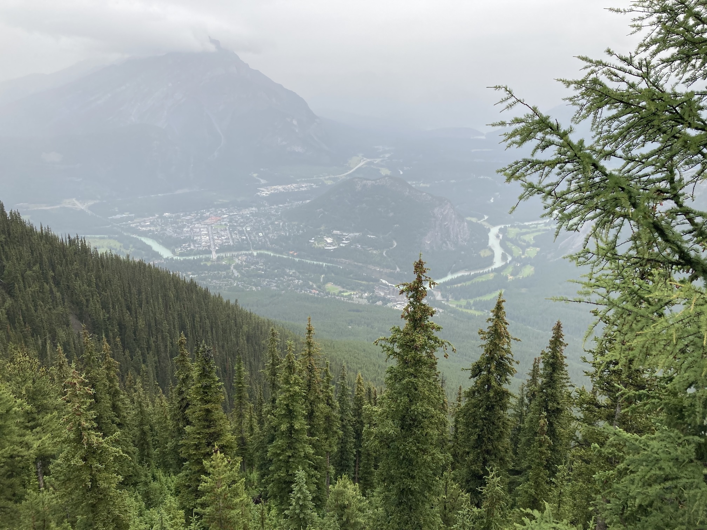However, the exhibition at the top was quite good.
By the time we gat back to the town it had stopped raining and, after a lot of searching, we had a mixture of pizzas, which were good value, very tasty, but too much to eat. Then we walked back to the hotel.
| Return to Canada &: USA | © David James 2025 Last updated: 30th August 2025 |